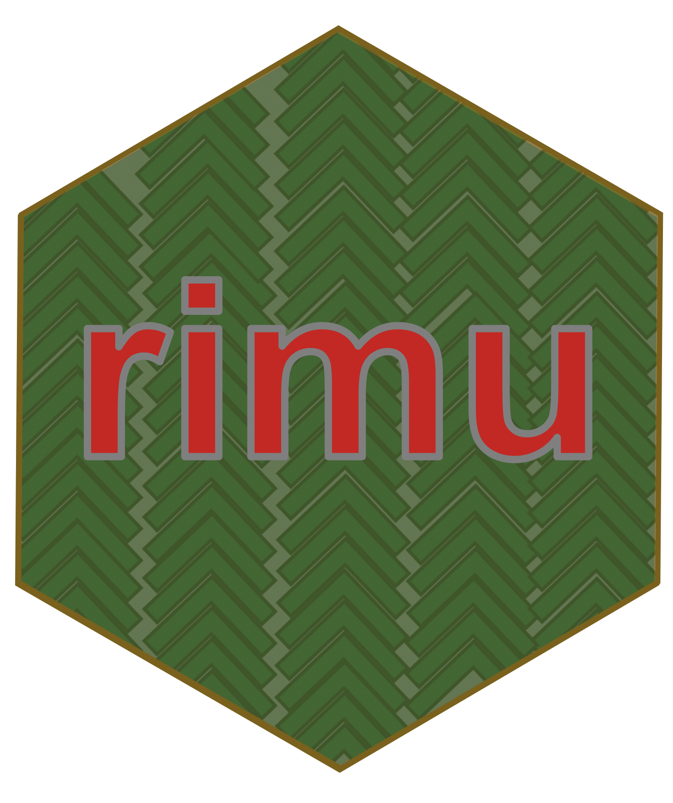

I’ve been working on the rimu package recently, which handles multiple-response categorical data. This has involved miscellaneous fixing, but also getting these new types to work happily with data frames, in preparation for the rata package that will support modelling and inference1.
For example, consider this little six-observation pretend dataset:
library(rimu)
data(nzbirds)
seen <- as.mr(nzbirds)
seen## [1] "kea+tui" "kea+ruru+kaki" "ruru"
## [4] "ruru+tui" "kea+ruru+tui+kaki" "kea+?ruru+tauhou"str(seen)## 'mr' logi [1:6, 1:5] kea+tui kea+ruru+kaki ruru ruru+tui kea+ruru+tui+kaki kea+tauhou
## - attr(*, "dimnames")=List of 2
## ..$ : NULL
## ..$ : chr [1:5] "kea" "ruru" "tui" "tauhou" ...The print method for the mr object prints the birds that were observed in each record. The ? indicates an NA: record number 6 isn’t clear on whether a ruru was seen.
The underlying representation, however, is a logical matrix with an attribute specifying which bird corresponds to each column. If you just try to put a matrix object into a data frame, it decays to the matrix and you end up with a 5-column data frame. That’s ugly. More importantly, there’s nothing to keep those five columns together in further data processing
data.frame(as.matrix(seen))## kea ruru tui tauhou kaki
## 1 1 0 1 0 0
## 2 1 1 0 0 1
## 3 0 1 0 0 0
## 4 0 1 1 0 0
## 5 1 1 1 0 1
## 6 1 NA 0 1 0One of the features of a data frame is that it can hold a wide variety of object types – but it’s tricky to get it to hold multi-column types. What I did was to borrow Terry Therneau’s solution for the Surv objects in the survival package. These are two-column or three-column matrices that mostly look and behave like simple vectors. I must once have known how this all worked, but it has been about 25 years since I did the initial port of the package to R. Looking the code again, it looks like overriding the length method to give the number of observations and the names method to give row names, and the as.data.frame method will keep the object in a single column of the data frame. Here’s a test example with a temporary class
seen2<-as.matrix(seen)
class(seen2)<-"tmp"
length.tmp <- function(x) nrow(x)
names.tmp <- function(x) rownames(x)
as.data.frame.tmp <- function(x, ...) as.data.frame.model.matrix(x, ...)
dim(data.frame(birds=seen2))## [1] 6 1It still displays as a binary matrix:
data.frame(birds=seen2)## birds.kea birds.ruru birds.tui birds.tauhou birds.kaki
## 1 1 0 1 0 0
## 2 1 1 0 0 1
## 3 0 1 0 0 0
## 4 0 1 1 0 0
## 5 1 1 1 0 1
## 6 1 NA 0 1 0Writing a format method fixes that, too. It’s a bit of a pain to write one for the temporary class, but the one for the real class is just
rimu:::format.mr## function (x, ...)
## format(as.character.mr(x), ...)
## <bytecode: 0x123572070>
## <environment: namespace:rimu>and it works
data.frame(birds=seen)## birds
## 1 kea+tui
## 2 kea+ruru+kaki
## 3 ruru
## 4 ruru+tui
## 5 kea+ruru+tui+kaki
## 6 kea+tauhouLet’s look at a slightly less trivial example, with data from the RStudio Community Survey. One of the questions is about other software used, presented as a comma-and-space-separated list.
data(rstudiosurvey)
names(rstudiosurvey)[40]## [1] "What computer tools and/or languages have you used besides R?"## Other software being used
head(rstudiosurvey[[40]])## [1] "C/C++, Python"
## [2] "Excel, Tableau"
## [3] "Excel, Tableau"
## [4] "C/C++, Excel, Go, Java, Javascript, Matlab, PHP, Python, Ruby, Visual Basic"
## [5] "Excel, SPSS, Mplus"
## [6] "Excel, Javascript, PHP, Python, scala"The as.mr method for strings breaks the string at the specified separator and sets up a multiple-response object; mtable does tables that count all the responses.
other_software<- as.mr(rstudiosurvey[[40]], sep=", ")
## only those with at least 20 responses
common<-mr_lump(other_software, n=20)
mtable(common)## C/C++ Python Excel Tableau Go Java Javascript Matlab PHP Ruby Visual Basic
## 533 1076 1511 435 47 291 459 436 176 89 360
## SPSS Stata SAS SQL Fortran Julia None Perl Rust Other
## 493 89 393 59 22 33 36 26 28 302## 'None' isn't really another package
common<-mr_drop(common, "None")
mtable(common)## C/C++ Python Excel Tableau Go Java Javascript Matlab PHP Ruby Visual Basic
## 533 1076 1511 435 47 291 459 436 176 89 360
## SPSS Stata SAS SQL Fortran Julia Perl Rust Other
## 493 89 393 59 22 33 26 28 302Another question asked how happy people were using R, on a 1-5 scale
names(rstudiosurvey)[18]## [1] "Please rate how much you enjoy using R on a scale of 1 to 5, where 1 is you don't enjoy it at all, and 5 is that you enjoy it a great deal."happy<-factor(rstudiosurvey[[18]])
mtable(happy, common)## C/C++ Python Excel Tableau Go Java Javascript Matlab PHP Ruby Visual Basic
## 1 2 2 2 0 0 1 0 1 0 0 1
## 2 7 12 14 4 1 6 6 5 5 2 2
## 3 22 33 51 17 1 9 12 17 6 4 10
## 4 120 246 370 96 9 71 102 109 39 18 85
## 5 379 780 1068 317 36 202 336 303 124 64 260
## SPSS Stata SAS SQL Fortran Julia Perl Rust Other
## 1 1 0 0 0 0 0 0 0 0
## 2 3 1 3 0 0 2 1 1 7
## 3 24 9 14 0 1 1 0 2 7
## 4 103 21 94 10 5 13 6 9 69
## 5 359 58 282 49 16 17 19 16 219round(prop.table(mtable(happy,common),2),2)## C/C++ Python Excel Tableau Go Java Javascript Matlab PHP Ruby Visual Basic
## 1 0.00 0.00 0.00 0.00 0.00 0.00 0.00 0.00 0.00 0.00 0.00
## 2 0.01 0.01 0.01 0.01 0.02 0.02 0.01 0.01 0.03 0.02 0.01
## 3 0.04 0.03 0.03 0.04 0.02 0.03 0.03 0.04 0.03 0.05 0.03
## 4 0.23 0.23 0.25 0.22 0.19 0.25 0.22 0.25 0.22 0.20 0.24
## 5 0.72 0.73 0.71 0.73 0.77 0.70 0.74 0.70 0.71 0.73 0.73
## SPSS Stata SAS SQL Fortran Julia Perl Rust Other
## 1 0.00 0.00 0.00 0.00 0.00 0.00 0.00 0.00 0.00
## 2 0.01 0.01 0.01 0.00 0.00 0.06 0.04 0.04 0.02
## 3 0.05 0.10 0.04 0.00 0.05 0.03 0.00 0.07 0.02
## 4 0.21 0.24 0.24 0.17 0.23 0.39 0.23 0.32 0.23
## 5 0.73 0.65 0.72 0.83 0.73 0.52 0.73 0.57 0.73And here’s a little data frame
timestamp<-as.Date(rstudiosurvey[[1]],format="%m/%d/%y")
df<-data.frame(timestamp, happy, common)
dim(df)## [1] 1838 3head(df)## timestamp happy
## 1 2019-12-13 5
## 2 2019-12-13 5
## 3 2019-12-13 5
## 4 2019-12-13 5
## 5 2019-12-13 5
## 6 2019-12-13 5
## common
## 1 C/C+++Python
## 2 Excel+Tableau
## 3 Excel+Tableau
## 4 C/C+++Python+Excel+Go+Java+Javascript+Matlab+PHP+Ruby+Visual Basic
## 5 Excel+SPSS+Other
## 6 Python+Excel+Javascript+PHP+OtherBut does this work for tibbles?
library(tibble)
tibble(birds=seen)## # A tibble: 6 × 1
## birds[,"kea"] [,"ruru"] [,"tui"] [,"tauhou"] [,"kaki"]
## <mr[,1]> <mr[,1]> <mr[,1]> <mr[,1]> <mr[,1]>
## 1 kea tui
## 2 kea ruru kaki
## 3 ruru
## 4 ruru tui
## 5 kea ruru tui kaki
## 6 kea tauhou💩
Tibbles have their own rendering system. If you try to explore it from the command line, you will find yourself in a maze of twisty little methods, all different. But there’s the vctrs package to create new vector types.
Multiple-response objects don’t map neatly on to any of the existing vctrs examples. There are multi-column types, such as the rational and decimal2 examples at that link, but these have the same number of component columns for every instance of the type. There are list-of-vectors types, such as the polynomial example at that link, but these have potentially varying numbers of elements for every item in a vector. The multiple-response objects have the same ‘width’ for every item in a vector – five, for the birds; twenty for the common software packages – but different multiple response objects have different widths.
I settled for the list-of-vectors approach. It will be relatively inefficient to do column operations with this representation, but that’s a problem for the future. Slightly more problematically, the list representation doesn’t straightforwardly allow NA values.
Following the polynomial example, we get
library(vctrs)##
## Attaching package: 'vctrs'## The following object is masked from 'package:tibble':
##
## data_framelibrary(rimu)
new_vmr <- function(x,levels=unique(do.call(c,x))) {
new_list_of(x, ptype = character(), class = "vmr", levs=levels)
}
as.vmr<-function(x,...) UseMethod("as.vmr")
as.vmr.mr<-function(x,...) {
l<-levels(x)
y<-lapply(apply(x,1,c, simplify=FALSE), function(i) l[as.logical(i)])
new_vmr(y,l)
}
as.vmr.default<-function(x,...) as.vmr(as.mr(x,...))
vec_ptype_full.vmr <- function(x, ...) "vmr"
vec_ptype_abbr.vmr <- function(x, ...) "vmr"
format.vmr <- function(x, ...) {
format(as.mr(unclass(x),...,levels=attr(x,"levs")))
}
obj_print_data.vmr <- function(x, ...) {
if (length(x) == 0)
return()
print(format(x), quote = FALSE)
}Now to test this – remembering to drop the NA value for ruru:
v_seen<- as.vmr(mr_na(seen,FALSE))
v_seen## <vmr[6]>
## [1] kea+tui kea+ruru+kaki ruru ruru+tui
## [5] kea+ruru+tui+kaki kea+tauhoutest<-tibble(birbs=v_seen, id=1:6,count=mr_count(seen))
dim(test)## [1] 6 3test## # A tibble: 6 × 3
## birbs id count
## <vmr> <int> <dbl>
## 1 [2] 1 2
## 2 [3] 2 3
## 3 [1] 3 1
## 4 [2] 4 2
## 5 [4] 5 4
## 6 [2] 6 2Everything mostly works – but inside the tibble, the object prints in a weird shorthand that turns out to be the length of the vector for that row. This is a bit confusing, because the vctrs vignette says The format method is also used by data frames, tibbles, and str(). After a while trying to find the code that actually did the formatting, it occurred to me to try the polynomial example that the vignette provides. It also prints as [2], etc, rather than calling the format method. So this is what’s supposed to be happening.
There’s a separate vignette on how to complicate the printing of tibbles with the pillar package. Following that, we can try
library(pillar)
pillar_shaft.vmr<-function (x, ...) {
out <- style_subtle(format(x))
new_pillar_shaft_simple(out, align = "right")
}which works
test## # A tibble: 6 × 3
## birbs id count
## <vmr> <int> <dbl>
## 1 kea+tui 1 2
## 2 kea+ruru+kaki 2 3
## 3 ruru 3 1
## 4 ruru+tui 4 2
## 5 kea+ruru+tui+kaki 5 4
## 6 kea+tauhou 6 2One more refinement: vctrs allows for full-width and abbreviated printing, and this printing format can get pretty wide, so I tried also defining an abbreviated format that’s just the binary values pasted together
pillar_shaft.vmr <- function(x, ...) {
full <- format(x)
binary <- apply(as.matrix(as.mr(x)),1, paste0,collapse="")
pillar::new_pillar_shaft(
list(full = full, binary =binary),
width = pillar::get_max_extent(full),
min_width = pillar::get_max_extent(binary),
class = "pillar_shaft_vmr"
)
}
format.pillar_shaft_vmr <- function(x, width, ...) {
if (get_max_extent(x$full) <= width) {
ornament <- x$full
} else {
ornament <- x$binary
}
pillar::new_ornament(ornament, align = "right")
}And it works.
tibble(birbs=v_seen, more_birbs=v_seen,
yet_more_birbs=v_seen,
all_the_birbs=v_seen,
will_it_never_end=v_seen)## # A tibble: 6 × 5
## birbs more_birbs yet_more_birbs all_the_birbs will_it_never_e…
## <vmr> <vmr> <vmr> <vmr> <vmr>
## 1 kea+tui kea+tui 11000 11000 11000
## 2 kea+ruru+kaki kea+ruru+kaki 10110 10110 10110
## 3 ruru ruru 00100 00100 00100
## 4 ruru+tui ruru+tui 01100 01100 01100
## 5 kea+ruru+tui+kaki kea+ruru+tui+kaki 11110 11110 11110
## 6 kea+tauhou kea+tauhou 10001 10001 10001I’m still not sure what I want for an abbreviated printout, but at least it can be done. We have a vctrs class, and one that’s a bit different from the existing examples. There’s still an issue with NA entries, but that should be fixable somehow.
If you have ideas about modelling and inference that you want it to support, now would be an excellent time to voice them↩︎